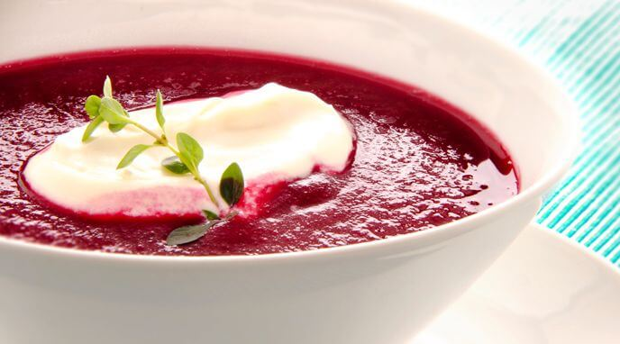
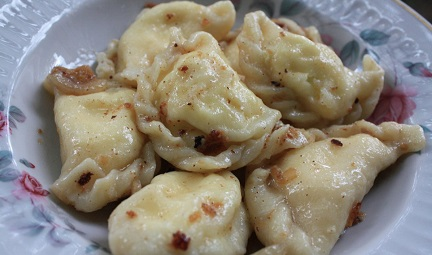

| NOMBRE DE LA COMIDA |
DESCRIPCION |
IMAGEN |
| BORSCH |
sopa vegetal hecha de remolacha, col, huevo, patatas, tomates, zanahorias, cebollas, ajo y eneldo.56 Hay entre 69 y 420 variedades de borsch ucranianos .6 Pueda incluir carne o pescado.5 |
 |
| Kovbasá |
Varias clases de cerdo ahumado o hervido, ternera o salchicha de pollo. |
 |
| Varényky |
Masa hervida hecho con rellenos tales como patatas machacadas y cebolla fritas, carne picada cocida y cebollas fritas, hígado y cebollas fritas, col frita con cebollas fritas, quark, cerezas, y fresas.56 Servido con crema ácida y mantequilla o azúcar cuándo es rellenado con frutas |
 |
| Pyrizhký |
Panecillos horneados embutidos con diferentes rellenos, tales como: carne picada, hígado, huevos, arroz, cebollas, col freída o sauerkraut, quark, cerezas etc |
 |